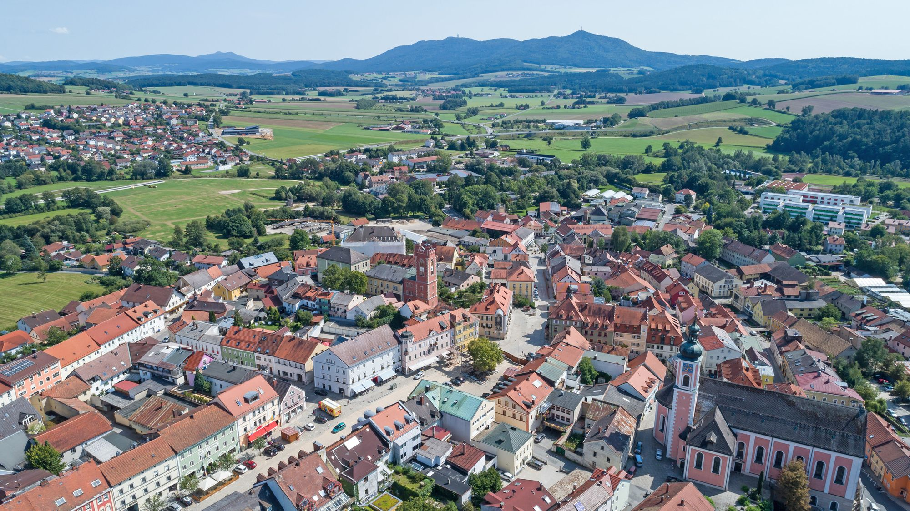

Om mig
Jag heter Suren Arakelyan född i staden Fürth som ligger i Tyskland nära staden Nunberg.
Flyttade hit när jag var 1 år gammal är 16 år idag ska fylla 17 år den 17 november. Jag är cirka 160 cm lång

Jag heter Suren Arakelyan född i staden Fürth som ligger i Tyskland nära staden Nunberg.
Flyttade hit när jag var 1 år gammal är 16 år idag ska fylla 17 år den 17 november. Jag är cirka 160 cm lång